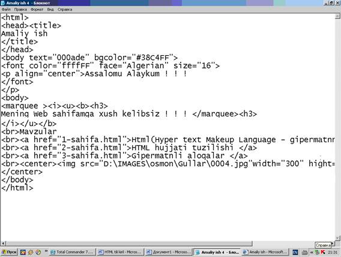
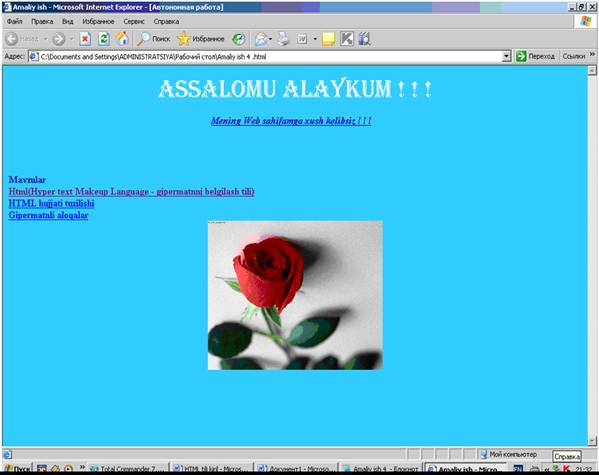
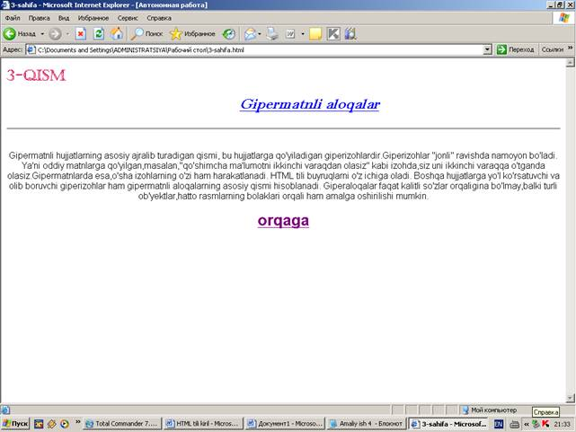

Amaliy ish №4.
Wеб хужжатларнинг асосий ажралиб турадиган қисми, бу ҳужжатларга қўйиладиган гипербоғламлардир. Гипербоғламлар «жонли» равишда намоён бўлади. Яҳни оддий матнларга қўйилган, масалан, «қўшимча маҳлумотларни иккинчи варақдан оласиз» каби изохда сиз уни иккинчи вараққа ўтсангиз, оласиз. Гиперматнларда эса ўша боғламларнинг ўзи харакатланади. Бошқа ҳужжатларга йўл кўрсатувчи ва олиб борувчи гипербоғламлар ҳам гиперматнли алоқаларнинг асосий қисми ҳисобланади.
HTML тилида ишорат ўрнатиш қуйидагича бўлади:
<А href=”main.htm”> main.htm га ишорат </А>
бу ерда «Маин.ҳтм га ишорат» калит сўзи жорий хужжат жойлашган каталогдаги Маин.ҳтм номли хужжатга ишоратни ифодалайди. агар бошқа бир каталогда жойлашган хужжатга ишорат қўйиш керак бўлса, у холда ўша каталокка йўлни тўлиқ кўрсатиш керак.
юқорида кўрилган ишоратлар фақатгина бир компьютергагина тегишли бўлиб, ишоратларни тармоқ бўйича хам қўйиш мумкин:
<А href=”http://www. Usafis.org/.usa.htm”>Америка</А>
Буларни қуйидаги сахифада кўришимиз мумкин

Бунда у қуйидаги кўринишга келади.

Гипер силка орқали бошқа сахифани осонликча очиш мумкин
